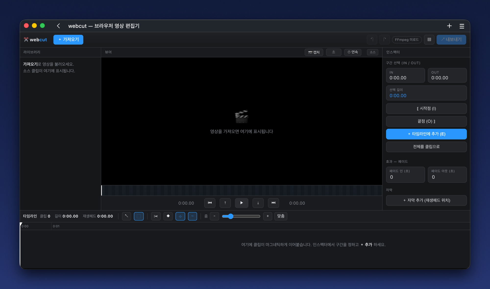

무거운 앱 없이, 브라우저 탭 하나로 자르고 바로 내보내는 웹기반 초고속 편집기.
설치 불필요 · 가입 불필요 · 무료 · 오픈소스 · 데스크탑 브라우저

자르고 붙이는 컷부터 자막·이미지·전환까지, Final Cut 스타일 타임라인에 전부 담았습니다.
구간을 잘라 클립으로 만들고 순서대로 이어붙입니다. 트리밍 핸들·블레이드·빠른 복사 컷.
타임라인을 드래그해 원하는 구간만 남기거나 삭제. 클립은 마그네틱하게 붙습니다.
영상 위에 드래그로 배치, 실시간 미리보기. 크기·색·외곽선까지 조절.
PNG·JPG를 올려 드래그·크기조절. 시작→끝 경로 애니메이션으로 이동 마커까지.
클립 사이 디졸브·슬라이드·페이드, 영상 시작/끝 페이드 인·아웃.
프로그램 모니터로 전체 재생, 부드러운 재생헤드, 줌·스키밍·레이어 트랙.
업로드 0, 서버 0. 영상은 당신의 브라우저 안에서만 처리됩니다.
네이티브 코덱을 WebAssembly로. 격리 환경에선 멀티스레드로 더 빠르게.
영상 파일을 끌어다 놓거나 선택하세요. 업로드가 아니라, 브라우저가 바로 읽습니다.
드래그로 구간을 골라 남기거나 자르고, 클립을 잇고, 재생헤드로 확인합니다.
버튼 한 번이면 mp4로 출력. 다운로드해서 바로 쓰세요. 파일은 기기 밖으로 안 나갑니다.
클라우드 업로드도, 백엔드 서버도 없습니다. 모든 처리는 당신의 브라우저 안에서 일어나므로, 민감한 영상도 안심하고 편집할 수 있습니다.